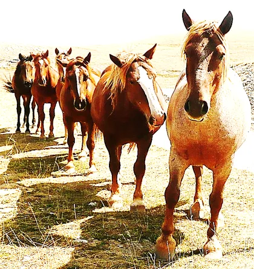

Kuyruk ADT
Kuyruk ADT

Tek sıra yürüyen atlar: öndeki önce geçer, yeni gelen sona katılır.
Kuyruk ADT
| İşlem | Açıklama |
|---|---|
enqueue(e) | e'yi arkaya ekler |
dequeue() | öndeki öğeyi çıkarır ve döndürür |
first() / peek() | öndeki öğeyi döndürür, çıkarmaz |
rear() | arkadaki öğeyi döndürür, çıkarmaz |
size() | öğe sayısı |
isEmpty() | kuyruk boş mu? |
isFull() | dolu mu? (yalnızca sabit kapasitede) |
public interface Queue<E> { int size(); boolean isEmpty(); void enqueue(E e); E first(); // boşsa null E dequeue(); // boşsa null }
null döndürür; bazı uygulamalar istisna (exception) fırlatır.Kuyruk ADT
Başlangıçta kuyruk boştur: front ve rear hiçbir öğeyi göstermez (null).
İlk öğe eklenir: tek öğe hem ön hem arkadır.
10 arkaya eklenir: rear ilerler, front yerinde kalır.
15 arkaya eklenir. Kuyruk: 20, 10, 15 (önden arkaya).
Öndeki 20 çıkar; front bir sonraki öğeye (10) ilerler.
10 çıkar. Şimdi front ve rear aynı öğeyi (15) gösterir.
Son öğe çıkınca ikisi de null olur. Çıkış sırası 20, 10, 15 = giriş sırası (FIFO).
Kuyruk ADT
java.util.Queue| İşlem | Hata fırlatır | Özel değer döner |
|---|---|---|
| Ekleme | add(e) | offer(e) → false |
| Çıkarma | remove() | poll() → null |
| İnceleme | element() | peek() → null |
ArrayDeque: dairesel dizi ile uygulanır, genellikle en hızlı seçenektir.LinkedList: bağlı liste ile uygulanır.Queue<Integer> q = new ArrayDeque<>(); q.offer(20); q.offer(10); q.offer(15); // [20, 10, 15] q.peek(); // 20, çıkarmaz q.poll(); // 20 → [10, 15] q.poll(); // 10 → [15] q.size(); // 1 q.poll(); // 15 → [] q.poll(); // null (boş)
enqueue/dequeue adlarını, Java kütüphanesinde ise offer/poll/peek üçlüsünü kullanacağız.Kuyruk ADT
Dizi ile Kuyruk
rear, çıkarmada front bir artar. Öğeler yerinden kaydırılmaz.İndis 0'daki öğe daha önce çıkarıldı; o yuva artık boş ama basit dizi kuyruğu onu yeniden kullanamaz.
Dizi ile Kuyruk
Boş kuyruk. Kapasite N = 6.
10, 20, 30, 40 eklenir: her eklemede rear++.
Üç öğe çıkar: her çıkarmada front++. İndis 0–2 artık boş.
50 ve 60 eklenir; rear dizinin son indisine (N − 1) ulaştı.
Sadece 3 öğe varken “dolu” hatası: başta 3 yuva boşa gidiyor. Kaydırma O(n) sürer; çözüm dairesel kuyruk.
Dizi ile Kuyruk
(i + 1) % N.Burada arka, bir sonraki öğenin yazılacağı boş yuvadır: arka = (front + size) % N = (0 + 5) % 8 = 5.
Dizi ile Kuyruk
| Ne? | Formül | Örnek: N = 8, front = 6, size = 4 |
|---|---|---|
| Sonraki boş yuva (ekleme yeri) | (front + size) % N | (6 + 4) % 8 = 2 |
| Son öğe | (front + size − 1) % N | (6 + 3) % 8 = 1 |
| Baştan k. öğe (k = 0, 1, …) | (front + k) % N | k = 2 → (6 + 2) % 8 = 0 |
| dequeue sonrası front | (front + 1) % N | (6 + 1) % 8 = 7 |
Dizi ile Kuyruk
Yalnızca front ve arka indisleri tutulursa, boş ve dolu kuyrukta ikisi de aynı yuvayı gösterir; durumlar ayırt edilemez. İki yaygın çözüm:
size == 0 · Dolu: size == Nfront == arka · Dolu: (arka + 1) % N == frontDizi ile Kuyruk
Boş kuyruk: size = 0. front ile arka aynı yuvayı gösterir.
10, 20, 30 eklenir; her eklemede size bir artar, arka hesaplanır.
10 ve 20 çıkar: front = (0 + 1) % 5 = 1, sonra (1 + 1) % 5 = 2.
40, arka = 3'e yazılır.
50 son yuvaya (4) yazılır. Yeni arka = (2 + 3) % 5 = 0 → başa sardı.
60, indis 0'a yazılır: basit dizide “dolu” denecek yerde boş yuva yeniden kullanıldı.
size == N → dolu. front == arka olsa da size sayesinde boş sanılmaz.
30 çıkar: front = (2 + 1) % 5 = 3. Öndeki öğe hâlâ en eski öğedir (FIFO).
40, 50, 60, 70 sırayla çıkar; front 3 → 4 → 0 → 1 → 2. size = 0 → boş.
Dizi ile Kuyruk
public class DaireselKuyruk<E> { private E[] dizi; // öğeleri saklar private int bas = 0; // ilk öğenin indisi (front) private int boyut = 0; // öğe sayısı (size) @SuppressWarnings("unchecked") public DaireselKuyruk(int kapasite) { dizi = (E[]) new Object[kapasite]; } public int boyut() { return boyut; } public boolean bosMu() { return boyut == 0; } public boolean doluMu() { return boyut == dizi.length; } public E ilk() { return bosMu() ? null : dizi[bas]; } // ekle(), cikar() → sonraki slayt }
(bas + boyut) % dizi.length ile hesaplanır. Böylece iki alanın birbiriyle tutarsız kalma riski ortadan kalkar.Dizi ile Kuyruk
ekle ve cikarpublic void ekle(E oge) { // enqueue if (doluMu()) throw new IllegalStateException("dolu"); int son = (bas + boyut) % dizi.length; dizi[son] = oge; boyut++; }
public E cikar() { // dequeue if (bosMu()) throw new IllegalStateException("boş"); E oge = dizi[bas]; dizi[bas] = null; // referansı bırak bas = (bas + 1) % dizi.length; boyut--; return oge; }
Bağlı Liste ile Kuyruk
front listenin başını, rear sonunu gösterir: ekleme sona, çıkarma baştan.class Dugum { int veri; Dugum sonraki; Dugum(int veri) { this.veri = veri; } } // alanlar: Dugum front, rear; int uzunluk;
Neden ekleme sona, çıkarma başa? Tek yönlü listede baştan silmek O(1), ama sondan silmek için sondan bir önceki düğümü bulmak O(n) gerekir.
Bağlı Liste ile Kuyruk
| Adım | Dairesel dizi | Bağlı liste |
|---|---|---|
| Arkaya yaz | dizi[(bas + boyut) % N] = x | rear.sonraki = yeni; rear = yeni |
| Önü ilerlet | bas = (bas + 1) % N | front = front.sonraki |
| Dolu kontrolü | boyut == N | gerekmez (bellek yettikçe) |
Bağlı Liste ile Kuyruk
enqueueBoş kuyruk. enqueue(10) çağrılır.
new Dugum(10): sonraki = null olan yeni düğüm.
bosMu() doğru → front = gecici.
rear = gecici, uzunluk++. Tek düğüm hem ön hem arka.
enqueue(15): yeni düğüm; kuyruk boş değil → else dalı.
rear.sonraki = gecici: eski arka yeni düğüme bağlanır.
rear = gecici, uzunluk++ → 2.
enqueue(20) aynı adımlarla. Liste dolaşılmaz: O(1).
public void enqueue(int veri) { Dugum gecici = new Dugum(veri); if (bosMu()) { front = gecici; } else { rear.sonraki = gecici; } rear = gecici; uzunluk++; }
Bağlı Liste ile Kuyruk
dequeueÜç öğeli kuyruk. dequeue() çağrılır.
Boş değil → sonuc = front.veri = 10.
front = front.sonraki. Eski düğümü çöp toplayıcı (garbage collector) temizler.
front null değil → rear aynı kalır; uzunluk--, 10 döner.
Bir dequeue() daha: 15 döner. front ve rear aynı düğümde.
Son öğe: front null oldu, ama rear hâlâ eski düğümü gösteriyor!
front == null → rear = null. Bu satır olmasa sonraki ekleme bozulurdu.
public int dequeue() { if (bosMu()) throw new NoSuchElementException(); int sonuc = front.veri; front = front.sonraki; if (front == null) rear = null; uzunluk--; return sonuc; }
Bağlı Liste ile Kuyruk
| İşlem | Dairesel dizi | Bağlı liste |
|---|---|---|
| enqueue | O(1) | O(1) |
| dequeue | O(1) | O(1) |
| first / size / isEmpty | O(1) | O(1) |
| Bellek | O(N) (kapasite kadar) | O(n) (öğe sayısı kadar) |
Kuyruk Türleri
| Tür | Ekleme | Çıkarma | Not |
|---|---|---|---|
| Basit kuyruk | arka | ön | FIFO |
| Giriş sınırlı (input restricted) | yalnızca arka | ön ve arka | kısıtlı deque |
| Çıkış sınırlı (output restricted) | ön ve arka | yalnızca ön | kısıtlı deque |
| Dairesel (circular) | arka | ön | dizi yuvaları yeniden kullanılır |
| Çift uçlu (deque) | ön ve arka | ön ve arka | FIFO'ya bağlı değil |
| Öncelikli (priority) | herhangi | en yüksek öncelik | sıra önceliğe göre |
dequeue ise “kuyruktan çıkar” işleminin adıdır; ikisini karıştırmayın.Kuyruk Türleri
Boş öncelikli kuyruk. Burada büyük değer = yüksek öncelik.
A tek öğe olarak dizi[0]'a yerleşir.
5 > 2 → A bir sağa kayar, B başa yerleşir.
1 en düşük öncelik → C kaydırma olmadan sona eklenir.
D: A ve C kayar; 5 > 5 değil → D, B'nin arkasında kalır (eşitlerde FIFO).
En yüksek öncelikli B, dizi[0]'dan alınır; kalanlar bir sola kayar.
Sonra D çıkar. Çıkış sırası önceliğe göre: B, D, A, C.
Kuyruk Türleri
class Eleman<T> { T veri; int oncelik; Eleman(T v, int p) { veri = v; oncelik = p; } }
// OncelikliKuyruk<E> alanları private Eleman<E>[] dizi = (Eleman<E>[]) new Eleman[10]; private int boyut = 0;
public void ekle(E veri, int p) { if (boyut == dizi.length) dizi = Arrays.copyOf(dizi, 2 * boyut); int i = boyut; while (i > 0 && dizi[i-1].oncelik < p) { dizi[i] = dizi[i - 1]; // sağa kaydır i--; } dizi[i] = new Eleman<>(veri, p); boyut++; }
public E cikar() { if (bosMu()) return null; E sonuc = dizi[0].veri; for (int i = 1; i < boyut; i++) dizi[i - 1] = dizi[i]; dizi[--boyut] = null; return sonuc; }
Dizi, öncelikleri büyükten küçüğe sıralı tutulur: ekle O(n) (kaydırma), cikar O(n). Heap ile ikisi de O(log n) olur (Bölüm 8).
Kuyruk Türleri
| İşlem | Java ArrayDeque | Süre |
|---|---|---|
| basaEkle(e) | offerFirst(e) | O(1) |
| sonaEkle(e) | offerLast(e) | O(1) |
| bastanCikar() | pollFirst() | O(1) |
| sondanCikar() | pollLast() | O(1) |
| ilk() / son() | peekFirst() / peekLast() | O(1) |
Kuyruk Türleri
Boş deque. Çift yönlü bağlı liste ile uygulayacağız: her düğümde onceki ve sonraki.
İlk düğüm: bas = son = yeni düğüm.
Sona ekleme: yeni.onceki = son; son.sonraki = yeni; son = yeni.
Başa ekleme: yeni.sonraki = bas; bas.onceki = yeni; bas = yeni.
Her iki uç da referansla tutulduğu için tüm eklemeler O(1).
Sondan çıkarma: son = son.onceki; son.sonraki = null. Önceki referansı sayesinde O(1).
Baştan çıkarma: bas = bas.sonraki; bas.onceki = null.
onceki referansı bunu O(1) yapar.Kuyruk Türleri
public void basaEkle(E veri) { Dugum<E> d = new Dugum<>(veri); if (bosMu()) { bas = son = d; } else { d.sonraki = bas; bas.onceki = d; bas = d; } boyut++; }
public void sonaEkle(E veri) { Dugum<E> d = new Dugum<>(veri); if (bosMu()) { bas = son = d; } else { d.onceki = son; son.sonraki = d; son = d; } boyut++; }
class Dugum<E> { E veri; Dugum<E> onceki, sonraki; Dugum(E veri) { this.veri = veri; } }
İki metot birbirinin aynadaki görüntüsüdür: bas ↔ son, onceki ↔ sonraki.
Kuyruk Türleri
public E bastanCikar() { if (bosMu()) return null; E veri = bas.veri; bas = bas.sonraki; if (bas == null) son = null; // boşaldı else bas.onceki = null; boyut--; return veri; }
public E sondanCikar() { if (bosMu()) return null; E veri = son.veri; son = son.onceki; if (son == null) bas = null; // boşaldı else son.sonraki = null; boyut--; return veri; }
bas null iken son silinmiş düğümü göstermeye devam eder ve sonraki sonaEkle bozulur. Boş deque'de Goodrich'teki gibi null döndürülür.Uygulamalar
İşletim sistemi CPU'yu süreçler arasında sırayla paylaştırır: kuyruğun önündeki süreç en fazla q birim çalışır, bitmediyse kuyruğun arkasına döner.
Üç süreç hazır kuyruğunda; kalan süreleri 5, 3, 2 birim. Zaman dilimi (quantum) q = 2.
P1 önden alınır (dequeue), 2 birim çalışır, kalan 3 ile arkaya eklenir (enqueue).
P2 2 birim çalışır, kalan 1 ile arkaya döner.
P3'ün 2 birimi bir dilime sığar → t = 6'da biter, kuyruğa dönmez.
P1 yine 2 birim çalışır; kalan 1.
P2'nin kalan 1 birimi biter (t = 9); dilimin tamamı kullanılmaz.
Tümü bitti. Tamamlanma zamanları: P3 = 6, P2 = 9, P1 = 10.
Simülatör: Round Robin Scheduler (quantum ve süreçleri kendiniz belirleyin).
Uygulamalar
Simülatör: Priority Scheduler (üç seviye, quantum, isteğe bağlı yaşlandırma).
Uygulamalar
Kuyruk kullanarak 1'den n'e kadar sayıların ikilik (binary) gösterimlerini üretin.
x + "0" ve x + "1"'dir. Kuyruktan bir sayı alıp sonuca yazar, bu iki sayıyı arkaya eklersek sayılar seviye seviye, yani artan sırada üretilir (genişlik öncelikli dolaşım).Uygulamalar
ikilikSayiUret(4)Kuyruğa kök olarak "1" eklenir.
"1" alınır → sonuc[0]; "10" ve "11" arkaya eklenir.
"10" alınır; "100", "101" eklenir.
"11" alınır; "110", "111" eklenir.
"100" alınır; "1000", "1001" eklenir.
Döngü biter: {"1", "10", "11", "100"}. Kuyrukta kalanlar kullanılmaz.
String[] ikilikSayiUret(int n) { String[] sonuc = new String[n]; Queue<String> q = new LinkedList<>(); q.offer("1"); for (int i = 0; i < n; i++) { sonuc[i] = q.poll(); q.offer(sonuc[i] + "0"); q.offer(sonuc[i] + "1"); } return sonuc; }
n kez poll, 2n kez offer → O(n) kuyruk işlemi. Dizgiler O(log n) uzunlukta olduğundan toplam karakter işi O(n log n).
Özet
| Uygulama | Ekleme | Çıkarma | Ön öğe | Not |
|---|---|---|---|---|
| Basit dizi (kaydırmalı) | O(1) | O(n) | O(1) | her çıkarmada kaydırma |
| Dairesel dizi | O(1) | O(1) | O(1) | sabit kapasite, % N |
| Bağlı liste | O(1) | O(1) | O(1) | front + rear referansı |
| Deque (çift yönlü liste) | O(1) iki uç | O(1) iki uç | O(1) | onceki referansı |
| Öncelikli (sıralı dizi) | O(n) | O(n)* | O(1) | heap ile O(log n) |
size sayacı ya da bir boş yuva.rear = null.* Diziyi küçükten büyüğe sıralı tutup en yüksek önceliği sondan çıkarırsak çıkarma O(1) olur; ekleme yine O(n).
Özet
Özet
if (front == null) rear = null; silinirse ne olur?← → veya boşluk ile gezinin · F: tam ekran · Home/End: ilk/son slayt